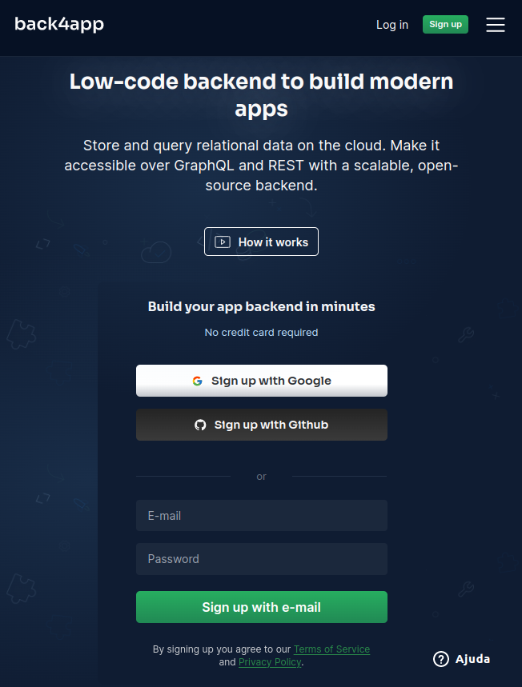
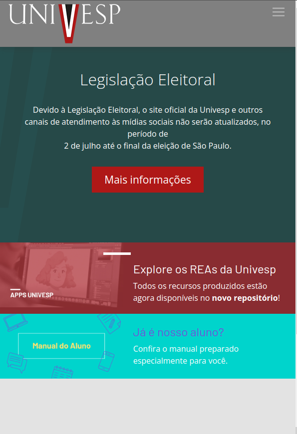
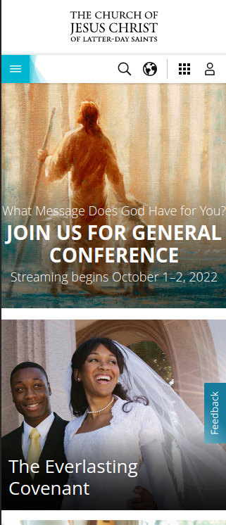

Design Principles
Contrast
Company: Back4App - IT Backend Solutions
The use of the blue background and the white elements brings an excellent visual contrast. The blue color gradients and the green detail of the login button bring a beautiful harmony to the page.
Visual Hierarchy
Organization: Univesp - São Paulo State Virtual University
The hierarchy theme fits well here, as they developed the page so that the main subject is concentrated in the center of the screen, and the secondary themes around it are in different colors. In this way, the user, when accessing the page, goes first to read the most important topic.
White Space and Clean Design
Organization: The Church of Jesus Christ of Latter-day Saints
A friendly interface, of course, and the white spaces were well thought out for a good user experience. This contributed to the need to have a lot of content on the screen but without it "polluting" the home page.